In this project, I implemented BSDFs for reflective, refracting, and microfaceted materials. I completed the first two tasks. Below is a bunny I rendered!
mega-bunny.png
The following images show the CBSpheres environment rendered with 0, 1, 2, 3, 4, 5, and 100 ray bounces, using 64 samples per pixel, 4 samples per light, and adaptive sampling.
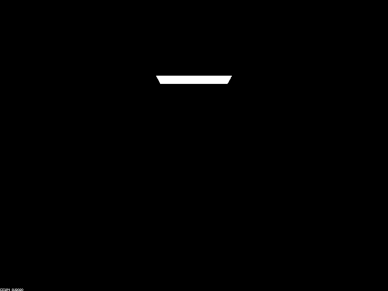 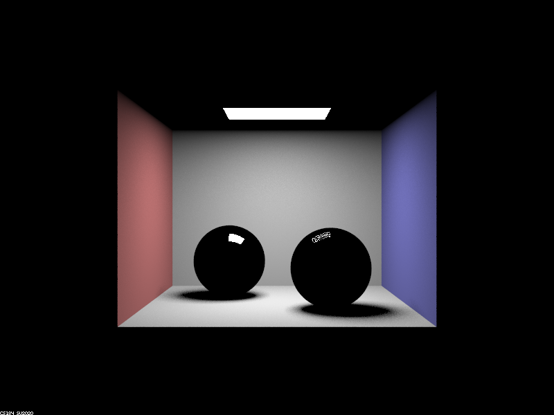 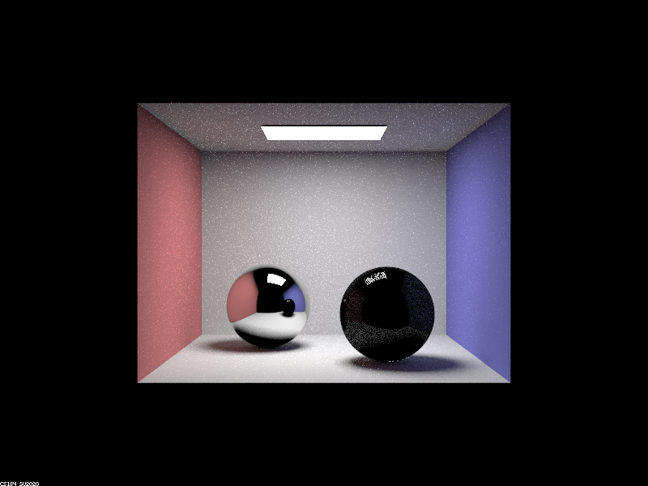 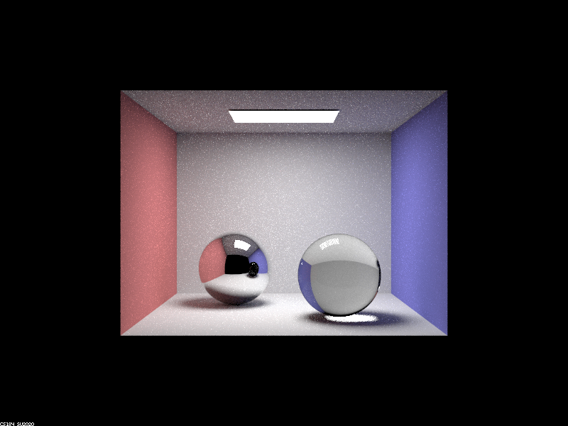 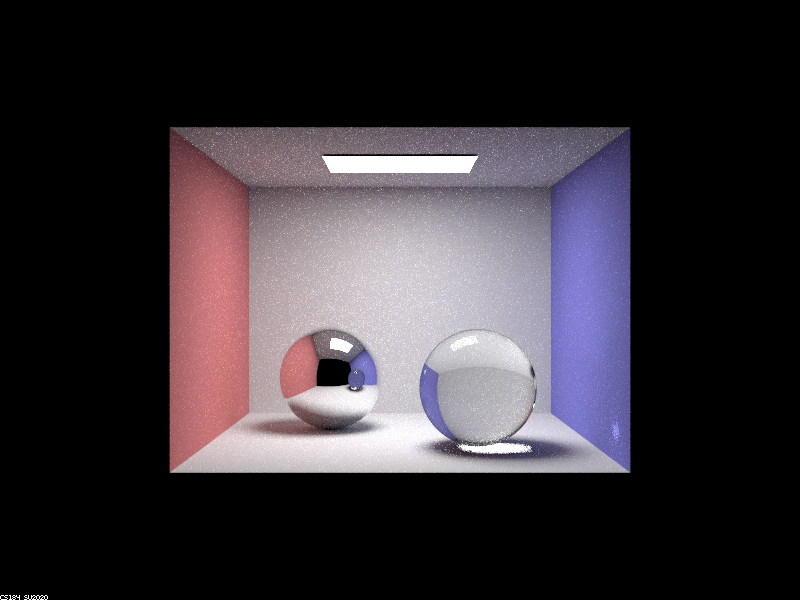 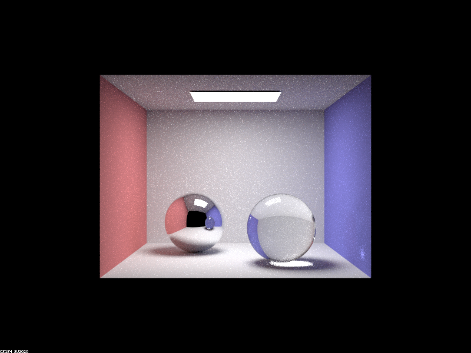 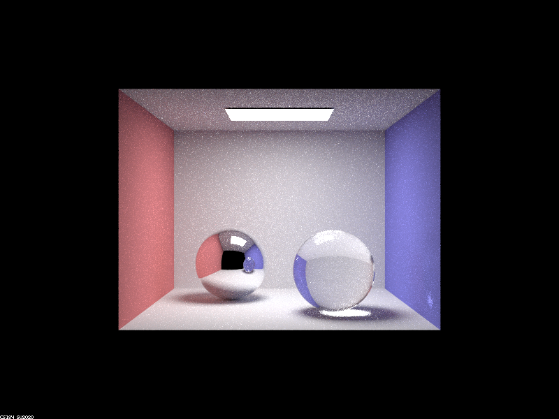
The zero-bounce rendering shows just the surface light. The one-bounce rendering shows the walls directly illuminated by the light, as well as a reflection of the light in both spheres. Note that the refractive sphere has a weaker reflection, due to the Fresnel equations splitting incident light into reflected and refracted portions.
With two bounces, the reflective sphere is now reflecting its environment (since rays hit the sphere, the environment, and then the room light). The refractive sphere is not yet refracting (since refraction has two ray bounces to both enter and leave the sphere, whereas reflection has just one), but we can see the partial reflection of the environment on its surface.
With three bounces, the refractive sphere is now refracting light, since rays enter it, leave it, hit the environment, and finally reach the room light. With four bounces, the refractive sphere also refracts in it's reflection in the reflective sphere, and casts some refracted light onto the room wall.
Very little change is visible with 5, and then 100 bounces. The only difference visible (to me) is the shadow of the refractive sphere, which acquires a slight tint, likely from rays being refracted, bouncing off the floor, the walls, and finally reaching the room light.
The following renders show CBdragon_microfacet_au rendered with alpha set to 0.005, 0.05, 0.25, and 0.5, using 128 samples per pixel and one sample per light, with 5 ray bounces.
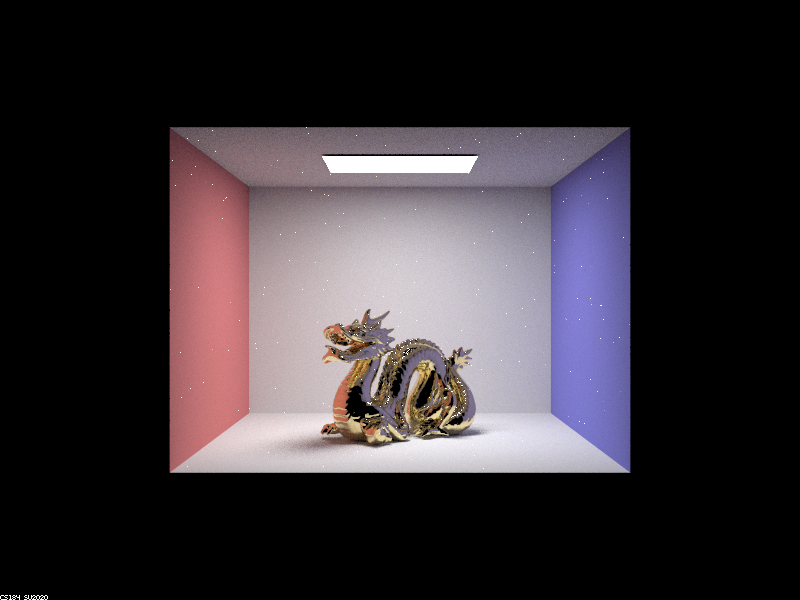 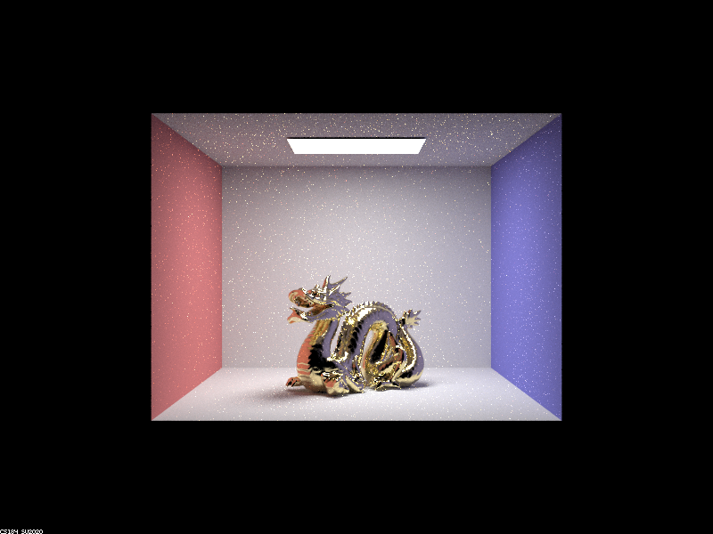 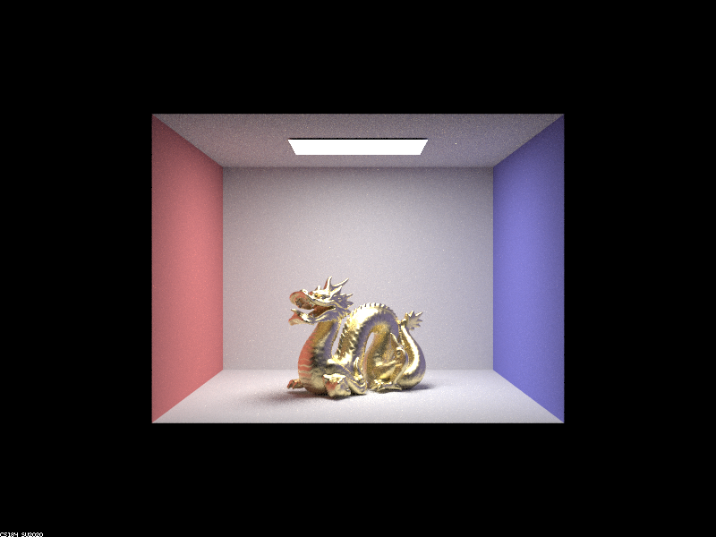 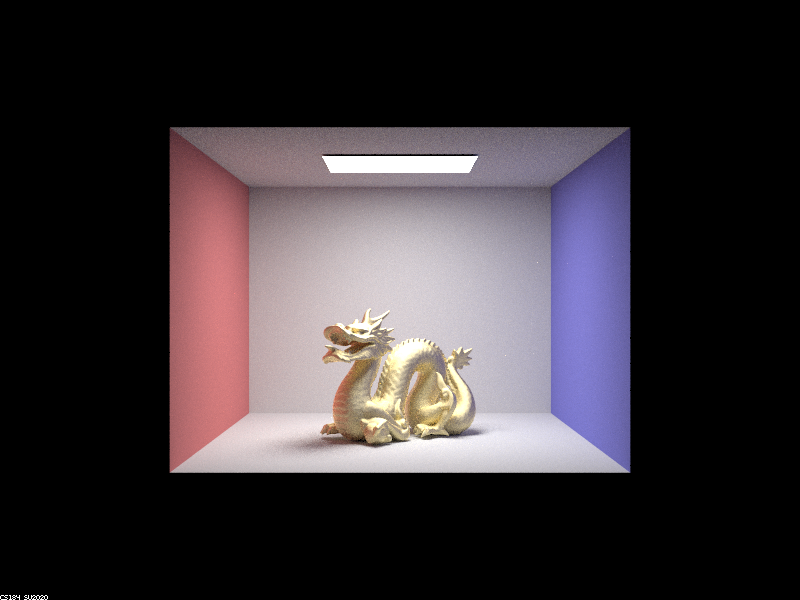
We see that as alpha increases, the dragon looks more "rough" and less "shiny". It also gets less noisy - the white spots are due to an extremely small pdf causing a high radiance, which is more likely to occur with a small alpha.
Below are two renders of CBbunny_microfacet_cu, rendered with cosine sampling (on the left) and importance sampling (on the right):
We see that the render with importance sampling has fewer white spots and is a lot less noisy in general. This is because, with cosine sampling, most of our samples are those with no reflected light, so they do not contribute to illumination. Whereas with importance sampling, we are focusing on the incident light directions that contribute to illumination, so the variance of the surface illumination is reduced (though in expectation both techniques should work).
Finally, below is a render of the microfaceted dragon with the chromium material: 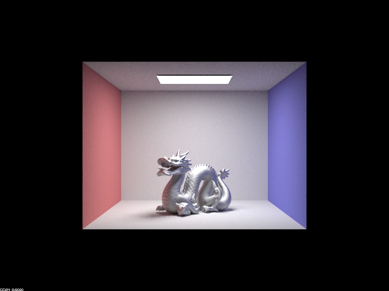
Since chromium is a relatively grey element, the eta and k parameters do not vary greatly with the frequency of the incident light.
Website link: https://cal-cs184-student.github.io/sp22-project-webpages-rahularya50/proj3-2/.